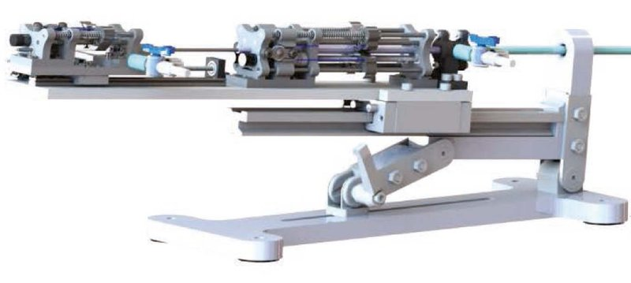

Actuated-tip devices · gatech_tmvr_qi2023
TMVR delivery
Georgia Tech telerobotic transcatheter delivery system for a mitral valve implant

1 / 9


- Family
- Actuated-tip devices (actuated-device)
- Devices
- own robotic catheter (5.7 mm OD) on a 1.11 m reinforced guide tube inside a customised steerable outer sheath (VERGO, Duke Extrusion; 6.6 mm ID, 8.3 mm OD, 990.6 mm) (qi2023 Abstract, Sec. IV-A)
- Degrees of freedom
- 4 (proximal bending +-90 deg, distal bending +-120 deg, prismatic 70 mm actuatable and restricted to 60 mm, distal torsion +-75 deg; qi2023 Sec. II)
- Push
- Tip-actuated
- Twist
- Tendon bending only
- Tested up to
- Phantom
- Sim-to-real
- None found — No simulation-trained controller found for this robot.
Testing
- Highest level
- Phantom
- What was tested
- implant delivery in a realistic human cardiovascular phantom (United Biologics) with a ViVitro pulsatile pump (63.1 ml/stroke, 70 beats/min), one demonstration; tube validation with the implant free and against the leaflet; no animal study yet (qi2023 Sec. IV-A, IV-B, V)
- Key numbers
- joint tracking RMSE 0.20, 0.74, 0.02 and 0.17 mm (qi2023 Sec. IV-A); Maxon 0.5 W 8 mm DC motors (64:1 bending, 16:1 torsion) and Pololu 100:1 prismatic gearmotor, tendon force up to about 20 N (Sec. II); implant advanced 40 mm under the leaflet (Sec. IV-A); tip deflection about 2 mm during a 15 s hold (Sec. IV-B)
Mechanism
- Push (translation)
- tendon/tip-actuation (distal prismatic joint: the quadlumen tube is advanced by a Pololu 100:1 gearmotor through a lead screw on a linear guide; tendon-driven bending and torsion joints; actuation unit on a stabiliser with a linear guide rail; qi2023 Sec. II)
- Twist (rotation)
- tendon-driven distal torsion joint: two antagonistic tendons on a lead-screw holder driven by a DC motor with a 16:1 gearbox (qi2023 Sec. II)
- Device range
- own catheter
- Target anatomy
- mitral valve (transseptal implant delivery)
Sensing and interface
- Force sensing
- none reported
- Leader and haptics
- wireless Xbox 360 controller, no haptics
- Imaging
- N.R.
- Sterility
- N.R.; waterproofed with two three-way stopcocks for saline introduction (qi2023 Sec. II)
Size
- Footprint (mm)
- N.R.
- Mass (kg)
- N.R.
Simulation
- Simulation model
- analytical static deflection model of the reinforced quadlumen tube (eqs. 1-10), checked against ANSYS 18.2 FEM and a camera bench test in 12 configurations (qi2023 Sec. III-C, Table I); not a model of the whole robot
- Sim-trained controller
- none found
Versions
- Lineage
- 2020 IROS first robotic transcatheter delivery system (title); ICRA 2021, T-MRB 2022 and ICRA 2023 papers of Nayar, Qi and Desai (qi2023 refs. [18]-[20], not read); 2023 RAL telerobotic system: reinforced guide tube in a 24 Fr commercial steerable sheath, stronger actuation, waterproofing, stabiliser, wireless joystick (qi2023, full)
Sources
- Telerobotic Transcatheter Delivery System for Mitral Valve Implant · IEEE Robotics and Automation Letters, 2023 · doi:10.1109/lra.2023.3265592 [qi2023_telerobotic]
- Towards the Development of a Robotic Transcatheter Delivery System for Mitral Valve Implant · 2020 IEEE/RSJ International Conference on Intelligent Robots and Systems (IROS), 2020 · doi:10.1109/iros45743.2020.9341551 [nayar2020_towards]
Notes
- Notes
- Tip-actuated device, so category actuated-device; Desai's COAST and balloon guidewires are in robots_A5. F4 2026-10-14: no clean photo of the whole robot in the paper (Figs. 1, 7(a), 8 show the unit small or with pointers).
This record
- Read level
- full — full (IEEE PDF, 2026-10-14)
- Picture
- qi2023_telerobotic Fig. 2 (system CAD: actuation system on the stabiliser with the guide tube), RA-L 2023, doi:10.1109/LRA.2023.3265592; native embedded raster p. 2 (3166 x 1136), which carries none of the vector labels ↗ — licence: publisher copyright (IEEE); grade B
- Picture changes
- native extract; cropped to the actuation system and stabiliser (guide tube cut at the right edge so the detail insets stay out); 40 px of white added at the top as margin (render background is pure white); no other edits; not upscaled
- Found by
- gap: Gap searches for robots the other searches missed.
- Data
- JSON · YAML:
records/robots/gatech_tmvr_qi2023.yaml - Correction
- Suggest a correction [repository not created yet]